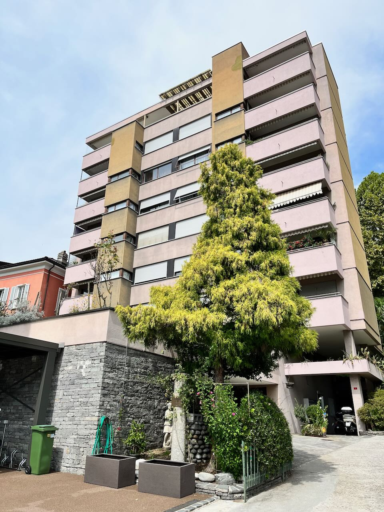
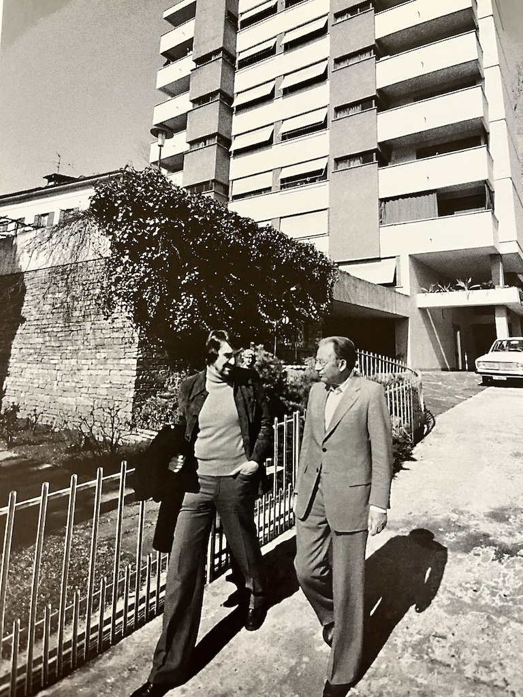
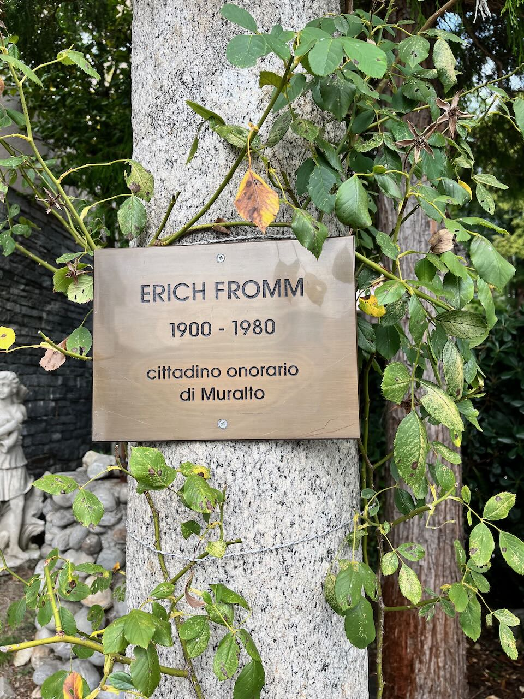

I discovered Erich Fromm by coincidence in a bookstore in Cambridge, UK, in 2012 (I think). The book I picked up was The Fear of Freedom, an amazing expose of how in a sick society, people actually do not want to be free and make decisions of their own, since this requires much more effort and energy compared to just following norms and believes. Fromm goes further and states the obvious: the "healthy" in a sick society are actually the sick (alienated ones), and the sick are the healthy (not completelly robotic and alienated from fellow humans and the environment).
This year I had a free weekend and decided to visit Muralto, the place where Fromm spent the last years of his life, living in a modest apartment and writting To Have or to Be.
It was an interesting trip, fishing for building number 4 but I couldn't find it. I asked a little bit around, the neighbours, and they knew Fromm lived there but didn't know in which building. One was demolished and a new one was build there years ago. I found the picture of Fromm walking with Rainer Funk along the street just there, down to the lake.


Muralto apartment block in 202208 (left), Erich Fromm and Rainer Funk in 197903 (right)
The video with Fromm explaining the "to be" and "to have" modes of existence was filmed in that apartment at Muralto.
In my opinion one of the most legendary passages is @10:20
Q: "You feel that people who live more by the having style, more than the being, they would allow that to take over, to, emm, push out being?"
Fromm: "Well, actually, you will find for instance, that it's very difficult for those people who are essentially living in the having structure, of sitting still and doing nothing or even thinking nothing, not talking. They get very anxious after 5 minutes or earlier. Because..., this actually constitutes one very pure form of being...to,...Be. And not to think about anything. And to be quiet and in a peculiar way happy. This is me, here I am, I sit, I see the light. There is no purpose to it. By having, having is always a purpose, getting something. Being in it's last sense has no purpose, just be. And, one could also say, in philosophies or religions based on being, being is that which is sacred. Because in a way being is life as against acting purposefully to make a living, which most people think about because there is nothing else to think about."
And Muralto indeed is a nice place to live, jumping for a swim into the lake, walking around, thinking, talking, being. To be. Here I am, I see the light. There is no purpose to it.
Muralto lakeside

Erich Fromm honorary citizen, Muralto